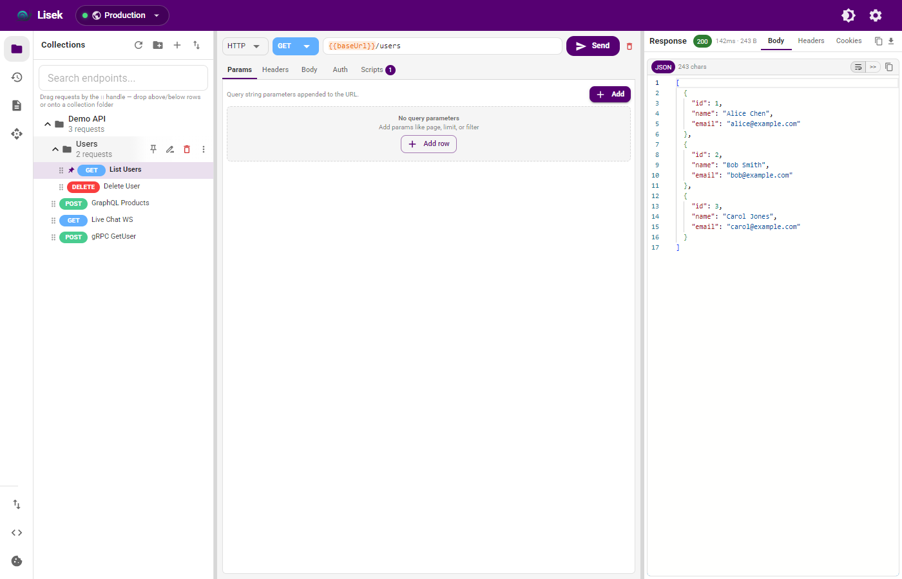
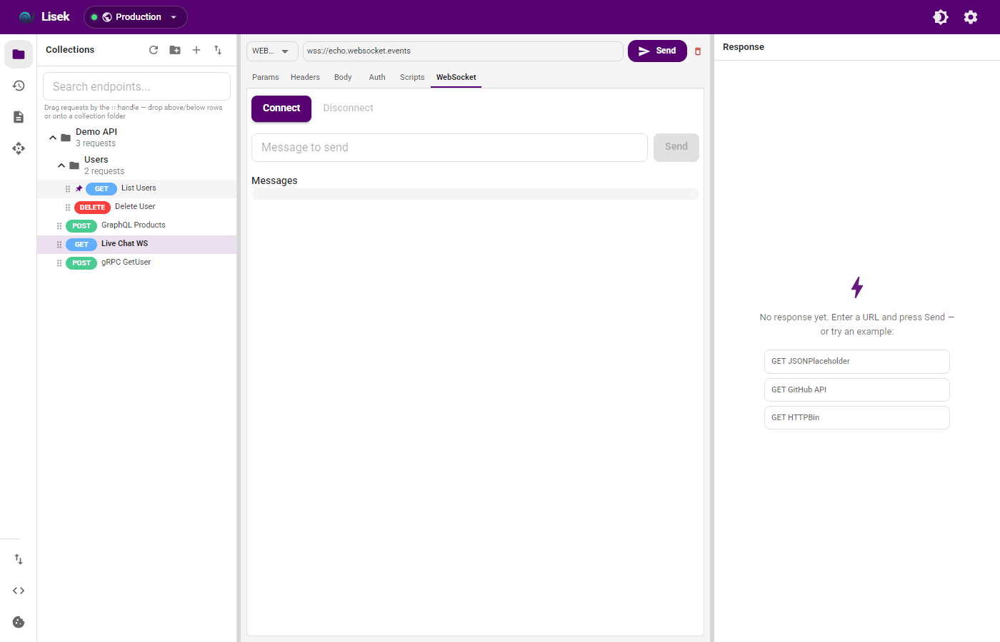
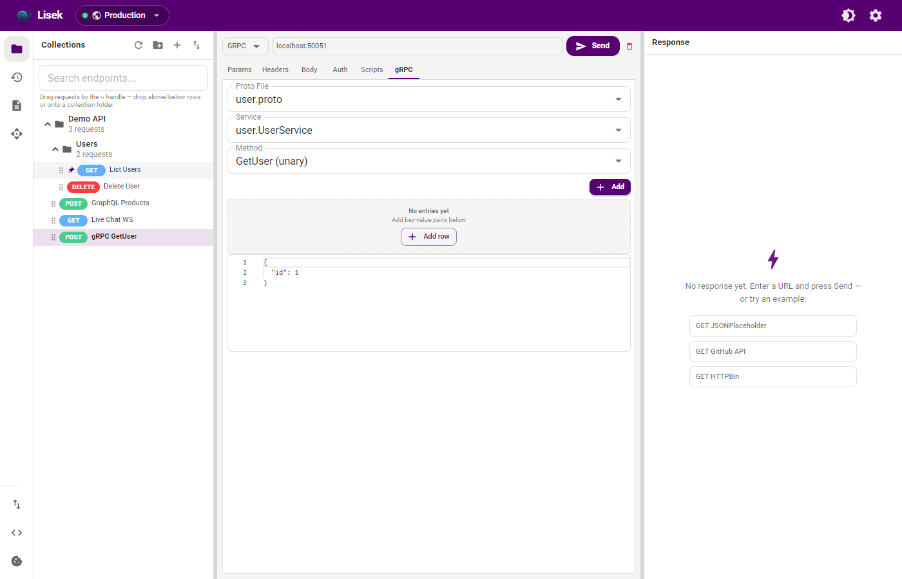
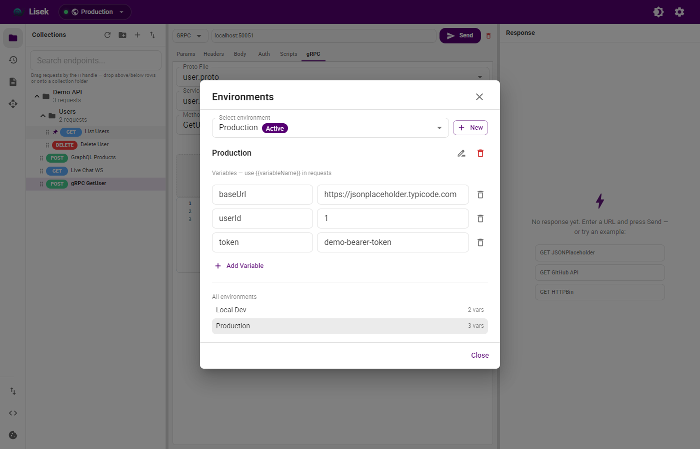
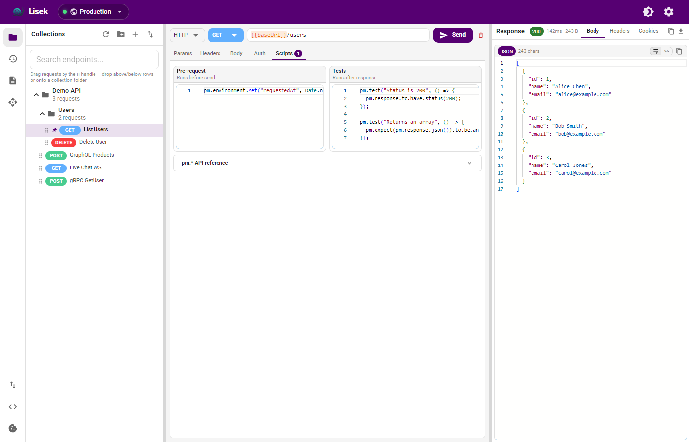
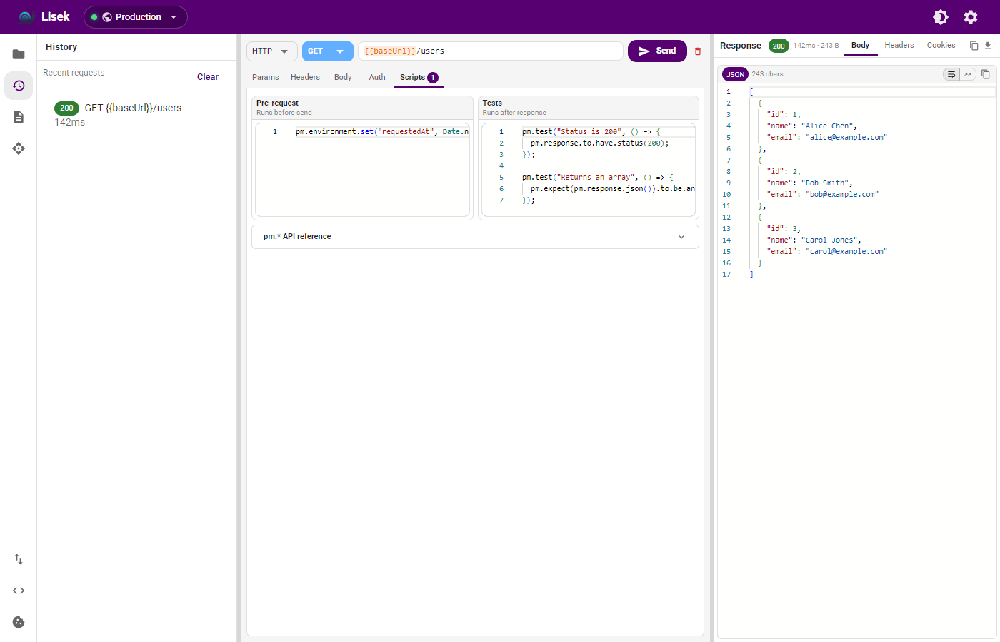

HTTP & REST
All methods, auth, cookies, form-data, JSONPath, binary preview, response diff, and cURL import/export.
Offline API client for HTTP, GraphQL, WebSocket, and gRPC — collections, mocks, and scripts that stay on your machine.
Capabilities
A focused desktop client — no account, no sync cloud, no waiting for someone else’s servers.
All methods, auth, cookies, form-data, JSONPath, binary preview, response diff, and cURL import/export.
Query editor, variables, introspection, and WebSocket subscriptions.
Live WebSocket log and Server-Sent Events panel for streaming APIs.
Import .proto from disk or URL, reflection browser, unary and streaming RPCs.
Nested folders, search that hides empty trees, CSV/JSON runs, schedules, and Git folder sync.
Local HTTP stub with JSON, text, or file responses — edit routes and hit them from any client.
Postman, OpenAPI, Insomnia, Bruno, HAR, and workspace backup — all local.
Base64, URL encode, SHA hashes, JWT decode, and AES tools beside your requests.
Product
Scroll sideways through the main surfaces — collections to history.






Release
Smarter collection search — folders with no matching requests disappear while you type, so the sidebar stays signal-only.
Flatpak packaging — Linux Flatpak manifest for Flathub submission, Electron2 BaseApp, and portal-friendly sandbox flags.
Docs site redesign — brand-forward landing page with a full-bleed product tour and clearer download paths.
Get Lisek
Free and open source under MIT. Windows 10/11 and Linux x64 builds ship from GitHub Releases. Flatpak is in review on Flathub.
If Windows shows “Windows protected your PC”, choose
More info → Run anyway. Lisek is not code-signed yet.
AppImage: chmod +x Lisek.AppImage.
RPM: sudo dnf install ./Lisek.rpm.
Installer or portable zip for Windows 10/11 (x64).
AppImage, RPM (Fedora/RHEL), or tar.gz for Linux x64.
Built with